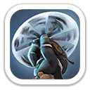
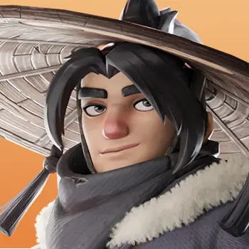
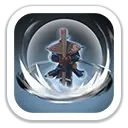
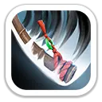
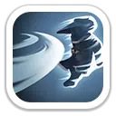
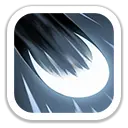
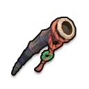
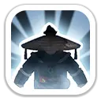
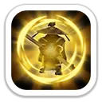

Барьер циклона
Вращает посох, наносит урон по области и получает неуязвимость на 2 секунды.
100% / 110% / 120% / 130% / 140% атаки

Танк · снижение входящего урона · гарнизон
Ву Минг — защитный герой пехоты 6 поколения. Он переживает первый взрывной урон благодаря неуязвимости, сильно режет входящий урон своей пехоты и одновременно усиливает общий и навыковый урон марша. Особенно хорош в гарнизоне, PvP и на Арене.
Максимальные значения героя 6 поколения.
Набор для Арены и Освоения делает Ву Минга очень живучим фронтлайнером.

Вращает посох, наносит урон по области и получает неуязвимость на 2 секунды.
100% / 110% / 120% / 130% / 140% атаки

На 4 секунды повышает собственные атаку и защиту.
Атака +8/12/16/20/24% · защита +16/24/32/40/48%

Каждая обычная атака дополнительно наносит урон случайному противнику.
20% / 22% / 24% / 26% / 28% атаки
Главная ценность Ву Минга в больших боях — сочетание защиты и усиления урона.

Снижает урон, получаемый его пехотой от обычных атак и навыков.
Обычные атаки −5/10/15/20/25% · навыки −6/12/18/24/30%

Повышает весь урон, наносимый дружественными войсками.
+4% / +8% / +12% / +16% / +20%
Повышает урон, наносимый навыками всех войск.
+5% / +10% / +15% / +20% / +25%

Максимальные характеристики: +921 атаки героя · +1 201 защиты · +18 022 здоровья · +133.5% смертоносности · +133.5% здоровья войск.


Один из лучших сценариев: высокая живучесть, снижение входящего урона и +15% защиты обороняющихся войск от снаряжения.
Сильный фронтлайнер для сборов и маршей. Хорошо переживает навыковый burst и одновременно усиливает урон всей армии.
Две секунды неуязвимости позволяют пережить стартовый взрыв урона, а высокий показатель здоровья делает его надёжным танком.
Не приоритет. Для Медведя Ву Минг не даёт преимущества, достаточного для замены Гектора; его сильные стороны больше про защиту и PvP.
Ву Минг — один из самых крепких танков 6 поколения. Для активно вкладывающихся игроков это сильная инвестиция в гарнизон, PvP и Арену: он одновременно режет входящий урон и усиливает наступление всего марша. Для F2P разумнее не распылять ресурсы и сначала закрывать более доступные цели поколения.